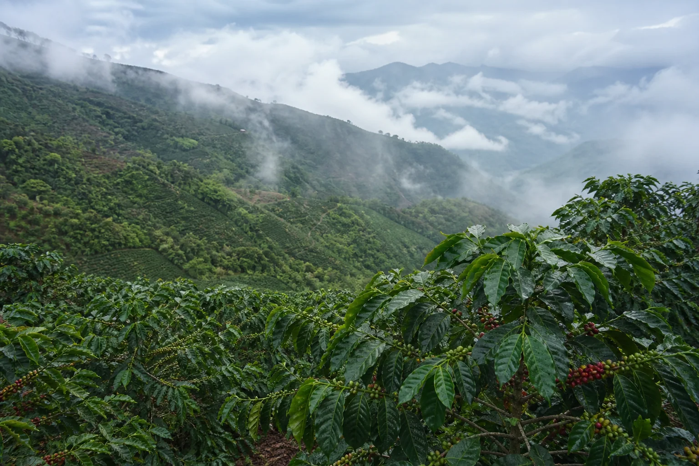
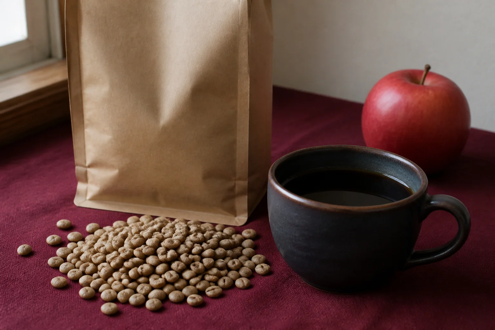

Origin
Huila, at altitude.
Las Flores grows Caturra in Huila, Colombia. The lot is washed and roasted light.
1,850
MASL · altitude of this lot
Las
Flores
Coffee with a known origin.

Origin
Las Flores grows Caturra in Huila, Colombia. The lot is washed and roasted light.
1,850
MASL · altitude of this lot
Roasting
A light roast is used so the known origin remains readable in the cup—not covered by it.
Northline buys coffee that can be named: place, producer, process, variety, height. The roast is the last recorded decision, not the first story.
Las Flores / 04 is offered as that record: Huila, washed Caturra, 1,850 metres, tasted as red apple, caramel, and citrus.

Available now
Huila, Colombia. Producer Las Flores. Washed Caturra at 1,850 MASL. Light roast. Red apple / caramel / citrus.
Featured release
Placeholder
Origin, producer, process, variety, altitude, and roast have not been supplied for this offering.
Content not specified
Placeholder
Awaiting origin record
Shop
Las Flores / 04 is the current release. The other two offerings await origin records.
Featured lot · Huila · washed · light